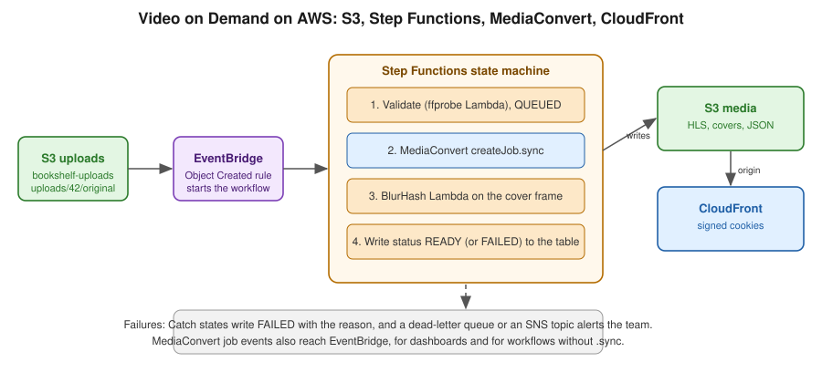

Video on Demand Pipeline on AWS
|
This content was generated with the assistance of AI and should be verified against the official documentation before being relied on in production. |
Baseline date: 2026-10-07. This page puts the pieces of the AWS sub-section together into the reference flow of upload pipelines, with managed services in place of self-hosted queues and workers: S3 for storage, EventBridge for the trigger, Step Functions for orchestration, MediaConvert for the encode, and CloudFront for delivery.

Trigger: S3 to EventBridge
Turn on EventBridge notifications for the uploads bucket, then match Object Created events for the uploads/ prefix.
put-bucket-notification-configuration replaces the bucket’s whole notification configuration, so read the current one
first and merge EventBridgeConfiguration into it. Otherwise the call removes the existing thumbnailer Lambda trigger
on the same bucket, see Lambda: event-driven and serverless
apps.
aws s3api get-bucket-notification-configuration --bucket bookshelf-uploads-111122223333 > notification.json
jq '. + {"EventBridgeConfiguration": {}}' notification.json > merged.json
aws s3api put-bucket-notification-configuration --bucket bookshelf-uploads-111122223333 \
--notification-configuration file://merged.json
aws events put-rule --name video-uploaded --event-pattern '{
"source": ["aws.s3"],
"detail-type": ["Object Created"],
"detail": {
"bucket": { "name": ["bookshelf-uploads-111122223333"] },
"object": { "key": [{ "prefix": "uploads/" }] }
}
}'
aws events put-targets --rule video-uploaded --targets \
'Id=1,Arn=arn:aws:states:us-east-1:111122223333:stateMachine:media-vod,RoleArn=arn:aws:iam::111122223333:role/bookshelf-events-start-sfn'EventBridge delivers at least once, so the workflow must be idempotent. EventBridge starts executions with generated names, so make the first state
the guard: the Validate function moves the media row from AWAITING_UPLOAD to QUEUED with a conditional update, and
raises a DuplicateEvent error when the condition fails. The state machine catches that error and ends in the AlreadyHandled
state, so two duplicate events cannot both start a job. Reference:
using EventBridge with S3 and
Messaging and Integration.
The state machine
Step Functions has an optimized integration with MediaConvert. With the .sync suffix, the state waits until the job
finishes, so no polling or separate completion handler is needed:
{
"Comment": "Bookshelf video on demand",
"StartAt": "Validate",
"States": {
"Validate": {
"Type": "Task",
"Resource": "arn:aws:states:::lambda:invoke",
"Parameters": { "FunctionName": "media-validate", "Payload.$": "$" },
"ResultSelector": { "mediaId.$": "$.Payload.mediaId", "source.$": "$.Payload.source" },
"Retry": [{ "ErrorEquals": ["Lambda.ServiceException", "Lambda.TooManyRequestsException"], "IntervalSeconds": 5, "MaxAttempts": 4, "BackoffRate": 2 }],
"Catch": [
{ "ErrorEquals": ["DuplicateEvent"], "Next": "AlreadyHandled" },
{ "ErrorEquals": ["States.ALL"], "Next": "ValidationFailed" }
],
"Next": "Transcode"
},
"AlreadyHandled": { "Type": "Succeed" },
"ValidationFailed": {
"Type": "Fail",
"Error": "ValidationFailed",
"Cause": "The upload was rejected or media-validate failed before a mediaId existed; see the execution history."
},
"Transcode": {
"Type": "Task",
"Resource": "arn:aws:states:::mediaconvert:createJob.sync",
"Parameters": {
"Role": "arn:aws:iam::111122223333:role/bookshelf-mediaconvert",
"JobTemplate": "bookshelf-hls-ladder",
"UserMetadata": { "mediaId.$": "$.mediaId" },
"Settings": { "Inputs": [{ "FileInput.$": "$.source" }] }
},
"ResultPath": "$.job",
"TimeoutSeconds": 7200,
"Catch": [{ "ErrorEquals": ["States.ALL"], "Next": "MarkFailed", "ResultPath": "$.error" }],
"Next": "BlurHash"
},
"BlurHash": {
"Type": "Task",
"Resource": "arn:aws:states:::lambda:invoke",
"Parameters": { "FunctionName": "cover-blurhash", "Payload.$": "$" },
"ResultPath": "$.blurhash",
"Catch": [{ "ErrorEquals": ["States.ALL"], "Next": "MarkReady", "ResultPath": "$.blurhashError" }],
"Next": "MarkReady"
},
"MarkReady": {
"Type": "Task",
"Resource": "arn:aws:states:::dynamodb:updateItem",
"Parameters": {
"TableName": "Media",
"Key": { "id": { "S.$": "$.mediaId" } },
"UpdateExpression": "SET #s = :ready",
"ExpressionAttributeNames": { "#s": "status" },
"ExpressionAttributeValues": { ":ready": { "S": "READY" } }
},
"End": true
},
"MarkFailed": {
"Type": "Task",
"Resource": "arn:aws:states:::dynamodb:updateItem",
"Parameters": {
"TableName": "Media",
"Key": { "id": { "S.$": "$.mediaId" } },
"UpdateExpression": "SET #s = :failed",
"ExpressionAttributeNames": { "#s": "status" },
"ExpressionAttributeValues": { ":failed": { "S": "FAILED" } }
},
"End": true
}
}
}aws stepfunctions create-state-machine --name media-vod --type STANDARD \
--definition file://media-vod.asl.json --role-arn arn:aws:iam::111122223333:role/bookshelf-sfnPoints to note:
-
The
Retryon the Lambda state handles transient service errors. AValidatefailure ends in theValidationFailedstate, because at that point the input is still the raw S3 event and has nomediaIdto record. Failures after validation go toMarkFailed, which is the status state of the diagram in upload pipelines. -
TimeoutSecondson the MediaConvert state stops a stuck job from holding the execution forever. Choose it from the longest video you accept. -
The BlurHash step is allowed to fail without failing the video, since a missing placeholder is not an outage.
-
A standard workflow suits long-running jobs. Express workflows are for short, high-volume work and have a five minute limit.
-
The Step Functions role needs
mediaconvert:CreateJob,iam:PassRolefor the MediaConvert role, and the EventBridge permissions that the.syncpattern uses to track the job (a managed rule). See the integration page below.
References: Step Functions with MediaConvert, Step Functions developer guide and Lambda: event-driven apps, which also covers Step Functions.
Without Step Functions: EventBridge on COMPLETE
A smaller design skips the state machine. A Lambda function reacts to S3 Object Created, calls CreateJob (see
MediaConvert), and a second function reacts to
the MediaConvert Job State Change event with status COMPLETE or ERROR, reading detail.userMetadata.mediaId to
update the status. It has two functions and no orchestration, and it is fine for a single step. Add Step Functions as soon as
there is a second step, retries between steps or branching.
The Video on Demand on AWS solution
AWS publishes the Video on Demand on AWS solution, a deployable CloudFormation stack with the same pieces: S3 for source and destination, Step Functions for the workflow (ingest, process, publish), MediaConvert for encoding, DynamoDB for tracking, SNS for notifications, and CloudFront for delivery. It can also start from metadata files and offers an optional MediaPackage VOD path. Use it as a reference design, or deploy it when its defaults fit, and compare it with this page to see what you would change. As with any packaged solution, read the current version of its guide, since options and services change.
Delivery and operations
-
Serve
bookshelf-media-111122223333through CloudFront with signed cookies, see streaming and delivery. -
Put an alarm on failed executions (
ExecutionsFailed) and on the age of the oldest incomplete execution. Keep logs of the state machine for debugging, see the monitoring guidance in security and operations. -
Set lifecycle rules: expire the
uploads/objects after processing and abort incomplete multipart uploads, see S3 object storage. -
Limit concurrency per account with MediaConvert queue limits, so a burst of uploads does not exhaust them.